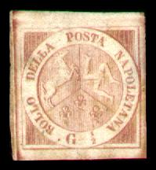
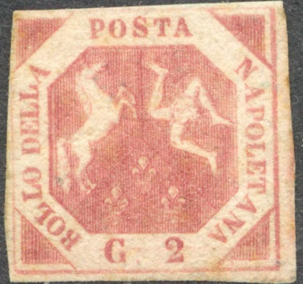
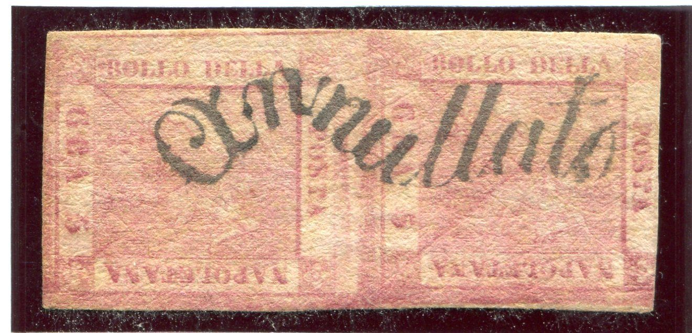
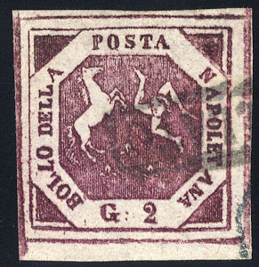
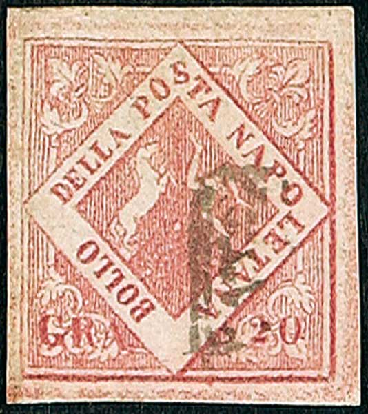

Napoli - Neapel
Return To Catalogue - Naples 1858 issue, philatelic forgeries - Naples 1860 issue, blue arms 'Trinacria' - Naples 1860 issue, blue cross - Italy - Neapolitan Provinces
Note: on my website many of the
pictures can not be seen! They are of course present in the
catalogue;
contact me if you want to purchase the catalogue.
With thanks to Lorenzo, (check his excellent
website on Italian States!:
http://www.antichistati.com/800/index800.html) who kindly set
some of his images at my disposal.






1/2 Grano redbrown 1 Grano redbrown 2 Grano redbrown 5 Grano redbrown 10 Grano redbrown 20 Grano redbrown 50 Grano redbrown
These stamps have a watermark 40 'Fleur de lis' in the whole sheet with a border with "BOLLI POSTALI" written in it. The first prints were in a lighter shade and replaced by darker printed stamps.
Value of the stamps |
|||
vc = very common c = common * = not so common ** = uncommon |
*** = very uncommon R = rare RR = very rare RRR = extremely rare |
||
| Value | Unused | Used | Remarks |
| 1/2 g | RR | RR | |
| 1 g | RR | *** | |
| 2 g | R | ** | |
| 5 g | RR | R | |
| 10 g | RR | RR | |
| 20 g | RR | RR | |
| 50 g | RRR | RRR | |

Typical cancel:




Wavy "Annullato" and curved "annullato"
cancels
With Sicily cancels.
Private reprints exist of all values except 2 g (the printing plate could not be found). They were made in 1896 (the Sassone 1969 catalogue says 1898 by the way as does the Serrane guide) and printed on thicker unwatermarked paper. These reprints were unofficial and made in Turin with the original printing plates. The colours are slightly different from the original issue.
Reprints of 1896
These reprints were (always?) printed with very large margins.
I've been told that the next stamp is such a reprint as well (with forged cancel):

How to detect forgeries: the easiest way is to check the
watermark: there are 40 Fleur-de-lys in a sheet of 100 stamps (so
most stamps show a portion of the watermark only). The genuine
stamps have secret letters in the design, however, these secret
signs are often extremely hard to see. The secret marks were
applied by Giuseppe Masini, who left his name in small letters on
the different stamps:
1/2 g "G"
1 g "M"
2 g "A"
5 g "S"
10 g "I"
20 g "N"
50 g "I"
Thus forming "G MASINI". Example of the 1 g (in the
corner at the end of the arrow, there is an inverted 'M'):
'G' in the 1/2 g value and 'I' in the 10 g value

A very clearly printed 1/2 G, but with no secret sign...
For Naples 1858 issue, philatelic forgeries, click here.
Postal forgeries also exist: 2 types of the 2 gr, 5 types of the 10 gr and 7 types of the 20 gr. For more details on these forgeries see the book 'Distinghuishing Characteristics of Classic Stamps, Europe - 19th Century, (except old German States)' by Hermann Schloss or 'Postal Forgeries of the World' by H.G. Leslie Fletcher (with pictures in black and white) or on Lorenzo's website: http://www.antichistati.com/800/appr/ap_30en.htm (with pictures of all postal forgeries).
Examples of postal forgeries:
2 g, example of a postal forgery:

Second postal forgery, right retouched one
Both postal forgeries of the 2 g are
lithographed, instead of engraved, they have no secret mark. The
above 2 g forgeries are the second postal forgery; the base of
the second "L" of "BOLLO" is slanting
downwards (this has been retouched later, see second and last
images). The "S" of "POSTA" has a large top
loop and its lower part slants to the left. The inscription frame
is clearly larger at the left hand side than at the right hand
side of the stamp. The "G" has a thick curled tail. The
"2" is situated lower than the "G" (this was
also later retouched).
There is another postal forgery of the 2 g stamp, with the
"S" of "POSTA" slanting to the right, the
"O" large. The "D" in "DELLA" is
small, and the "LL" is larger. Also in this forgery,
the inscription frame is larger at the left hand side than at the
right hand side.
10 gr, example of a postal forgery:

Postal forgery nr 2
This postal forgery of 10 g is lithographed, instead of engraved. The "PO" of "POSTA" is placed too low and the "S" is too short at the top. There are also differences in the other letters of the other words. It is the second postal forgery of the 10 g, described in the book 'Postal Forgeries of the World'.
Postal forgery nr 5
This postal forgery of 10 g has no ':' behind the 'G', it is lithographed, instead of engraved. The "P" of "POSTA" has a small top loop and the "S" is quite strange compared to the genuine stamp. It is the fifth postal forgery of the 10 g, described in the book 'Postal Forgeries of the World'.

(I've been told that this could be another postal forgery)

This looks like another postal forgery of the 10 G to me.
20 g, example of a postal forgery:

The above postal forgery of the 20 g is lithographed, instead of engraved. The secret mark "N" is missing. The "P" of "POSTA" is more elongated at the top and the "O" is tall and thin. There are also differences in the other letters.

Another postal forgery of the 20 g value

Other postal forgery with the "P" and "O" of
"POSTA" too far apart.
Typical cancel "ANNULLATO" (here on letter):


{kind=link}
{kind=link}
{kind=link}
{kind=link}